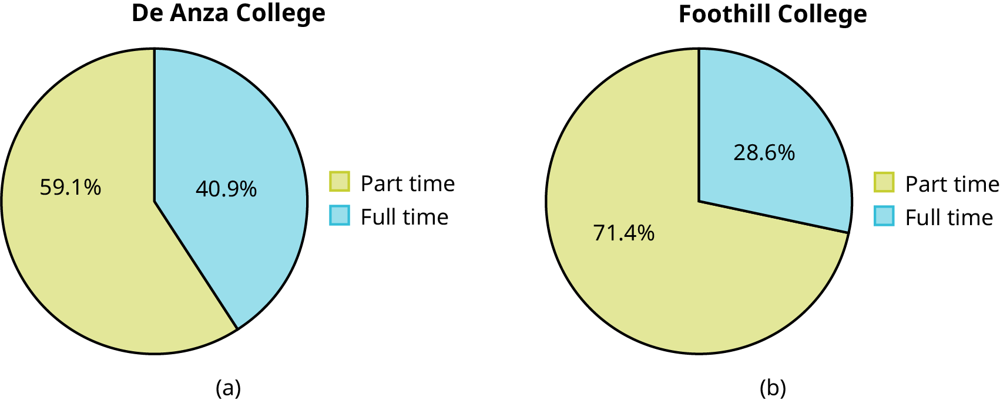
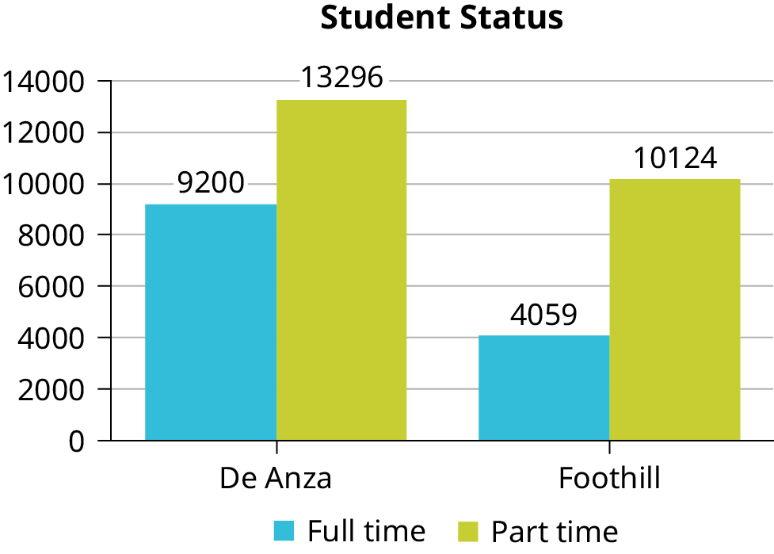
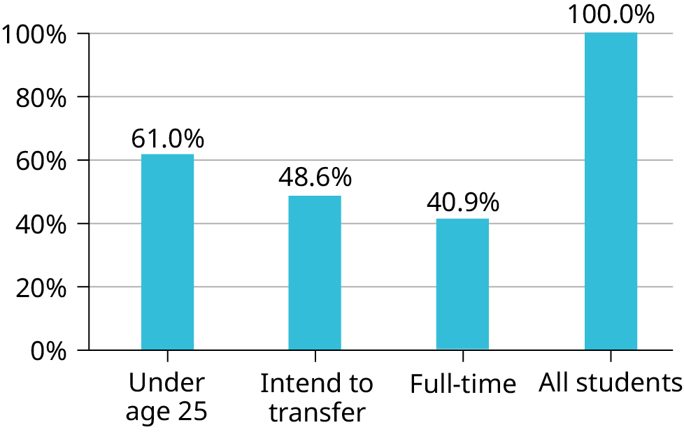
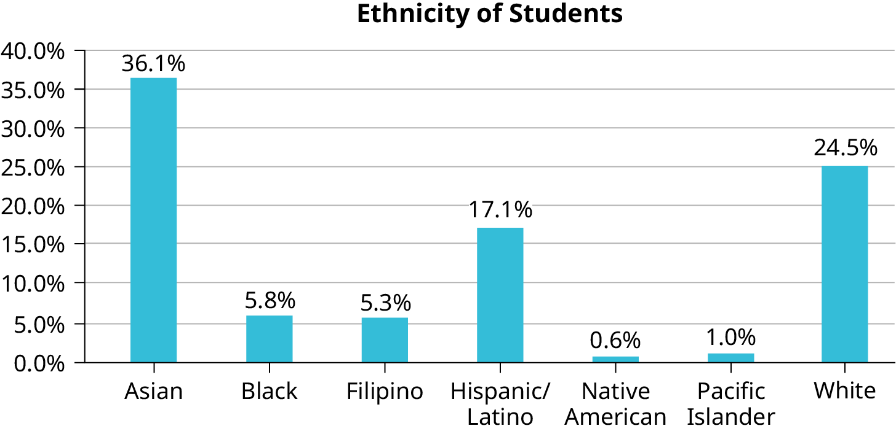
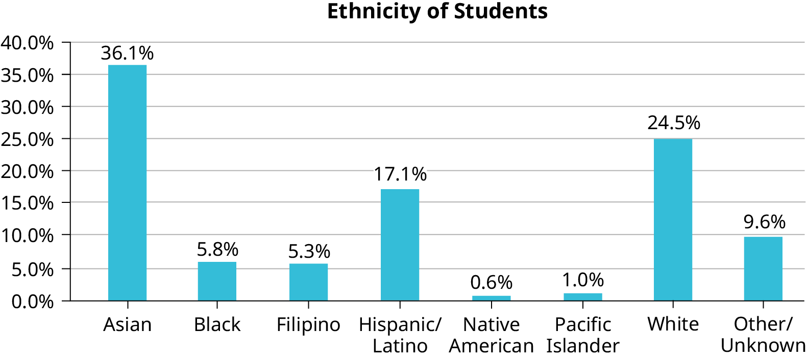
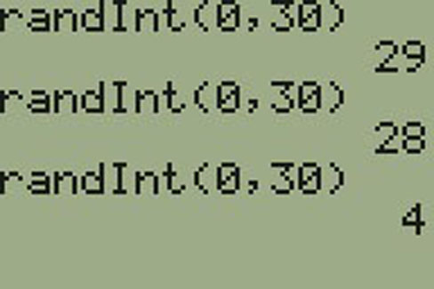

1.2 Data, Sampling, and Variation in Data and Sampling
Data may come from a population or from a sample. Lowercase letters like or generally are used to represent data values. Most data can be put into the following categories:
Qualitative
Quantitative
Qualitative data are the result of categorizing or describing attributes of a population. Qualitative data are also often called categorical data. Hair color, blood type, ethnic group, the car a person drives, and the street a person lives on are examples of qualitative data. Qualitative data are generally described by words or letters. For instance, hair color might be black, dark brown, light brown, blonde, gray, or red. Blood type might be AB+, O-, or B+. Researchers often prefer to use quantitative data over qualitative data because it lends itself more easily to mathematical analysis. For example, it does not make sense to find an average hair color or blood type.
Quantitative data are always numbers. Quantitative data are the result of counting or measuring attributes of a population. Amount of money, pulse rate, weight, number of people living in your town, and number of students who take statistics are examples of quantitative data. Quantitative data may be either discrete or continuous.
All data that are the result of counting are called quantitative discrete data. These data take on only certain numerical values. If you count the number of phone calls you receive for each day of the week, you might get values such as zero, one, two, or three.
Data that are not only made up of counting numbers, but that may include fractions, decimals, or irrational numbers, are called quantitative continuous data. Continuous data are often the results of measurements like lengths, weights, or times. A list of the lengths in minutes for all the phone calls that you make in a week, with numbers like 2.4, 7.5, or 11.0, would be quantitative continuous data.
Data Sample of Quantitative Discrete Data
The data are the number of books students carry in their backpacks. You sample five students. Two students carry three books, one student carries four books, one student carries two books, and one student carries one book. The numbers of books (three, four, two, and one) are the quantitative discrete data.
Try It
The data are the number of machines in a gym. You sample five gyms. One gym has 12 machines, one
gym has 15 machines, one gym has ten machines, one gym has 22 machines, and the other gym has 20
machines. What type of data is this?
Data Sample of Quantitative Continuous Data
The data are the weights of backpacks with books in them. You sample the same five students. The weights (in pounds) of their backpacks are 6.2, 7, 6.8, 9.1, 4.3. Notice that backpacks carrying three books can have different weights. Weights are quantitative continuous data.
Try It
The data are the areas of lawns in square feet. You sample five houses. The areas of the lawns are 144 sq. feet, 160 sq. feet, 190 sq. feet, 180 sq. feet, and 210 sq. feet. What type of data is this?
You go to the supermarket and purchase three cans of soup (19 ounces tomato bisque, 14.1 ounces lentil, and 19 ounces Italian wedding), two packages of nuts (walnuts and peanuts), four different kinds of vegetable (broccoli, cauliflower, spinach, and carrots), and two desserts (16 ounces pistachio ice cream and 32 ounces chocolate chip cookies).
Name data sets that are quantitative discrete, quantitative continuous, and qualitative.
One Possible Solution:
The three cans of soup, two packages of nuts, four kinds of vegetables and two desserts are quantitative discrete data because you count them.
The weights of the soups (19 ounces, 14.1 ounces, 19 ounces) are quantitative continuous data because you measure weights as precisely as possible.
Types of soups, nuts, vegetables and desserts are qualitative data because they are categorical.
Try to identify additional data sets in this example.
Try It
The following list of materials was purchased by a purchase manager in a company:
Two types of nails (2 kg box nails, 3 kg roofing nails)
One type of oil (4 L machine oil)
Four types of screws (3 kg wood screws, 5 kg machine screws, 1 kg set screws, 2 kg socket screws)
Name data sets that are quantitative discrete, quantitative continuous, and qualitative.
One possible solution:
The two types of nails, one type of oil, and four types of screws are quantitative discrete data because you count them.
The weights of materials are quantitative continuous data because you can measure weight as precisely as possible.
Types of nails, oil, and screws are qualitative data because they are categorical.
Try to identify additional data sets in the example.
The data are the colors of backpacks. Again, you sample the same five students. One student has a red backpack, two students have black backpacks, one student has a green backpack, and one student has a gray backpack. The colors red, black, black, green, and gray are qualitative data.
Try It
The data are the colors of houses. You sample five houses. The colors of the houses are white, yellow, white, red, and white. What type of data is this?
NOTE
You may collect data as numbers and report it categorically. For example, the quiz scores for each student are recorded throughout the term. At the end of the term, the quiz scores are reported as A, B, C, D, or F.
Work collaboratively to determine the correct data type (quantitative or qualitative). Indicate whether quantitative data are continuous or discrete. Hint: Data that are discrete often start with the words "the number of."
the number of pairs of shoes you own
the type of car you drive
the distance it is from your home to the nearest grocery store
the number of classes you take per school year.
the type of calculator you use
weights of dogs at an animal shelter
number of correct answers on a quiz
IQ scores (This may cause some discussion.)
Items a, d, and g are quantitative discrete; items c, f, and h are quantitative continuous; items b and e are qualitative, or categorical.
Try It
Determine the correct data type (quantitative or qualitative) for the number of cars in a parking lot. Indicate whether quantitative data are continuous or discrete.
A statistics professor collects information about the classification of her students as first-year students, sophomores, juniors, or seniors. The data she collects are summarized in the pie chart the figure. What type of data does this graph show?
This pie chart shows the students in each year, which is qualitative (or categorical) data.
Try It
The registrar at State University keeps records of the number of credit hours students complete each semester. The data collected are summarized in the histogram. The class boundaries are 10 to less than 13, 13 to less than 16, 16 to less than 19, 19 to less than 22, and 22 to less than 25.
What type of data does this graph show?
Qualitative Data Discussion
Below are tables comparing the number of part-time and full-time students at De Anza College and Foothill College enrolled for the most recent spring quarter. The tables display counts (frequencies) and percentages or proportions (relative frequencies). The percent columns make comparing the same categories in the colleges easier. Displaying percentages along with the numbers is often helpful, but it is particularly important when comparing sets of data that do not have the same totals, such as the total enrollments for both colleges in this example. Notice how much larger the percentage for part-time students at Foothill College is compared to De Anza College.
Most Recent Spring Quarter
De Anza College
Foothill College
Number
Percent
Number
Percent
Full-time
9,200
40.9%
Full-time
4,059
28.6%
Part-time
13,296
59.1%
Part-time
10,124
71.4%
Total
22,496
100%
Total
14,183
100%
Tables are a good way of organizing and displaying data. But graphs can be even more helpful in understanding the data. There are no strict rules concerning which graphs to use. Two graphs that are used to display qualitative data are pie charts and bar graphs.
In a pie chart, categories of data are represented by wedges in a circle and are proportional in size to the percent of individuals in each category.
In a bar graph, the length of the bar for each category is proportional to the number or percent of individuals in each category. Bars may be vertical or horizontal.
A Pareto chart consists of bars that are sorted into order by category size (largest to smallest).
Look at the figure and the figure and determine which graph (pie or bar) you think displays the comparisons better.
It is a good idea to look at a variety of graphs to see which is the most helpful in displaying the data. We might make different choices of what we think is the “best” graph depending on the data and the context. Our choice also depends on what we are using the data for.


Percentages That Add to More (or Less) Than 100%
Sometimes percentages add up to be more than 100% (or less than 100%). In the graph, the percentages add to more than 100% because students can be in more than one category. A bar graph is appropriate to compare the relative size of the categories. A pie chart cannot be used. It also could not be used if the percentages added to less than 100%.
De Anza College Most Recent Spring Quarter
Characteristic/Category
Percent
Full-Time Students
40.9%
Students who intend to transfer to a 4-year educational institution
48.6%
Students under age 25
61.0%
TOTAL
150.5%

Omitting Categories/Missing Data
The table displays Ethnicity of Students but is missing the "Other/Unknown" category. This category contains people who did not feel they fit into any of the ethnicity categories or declined to respond. Notice that the frequencies do not add up to the total number of students. In this situation, create a bar graph and not a pie chart.
Ethnicity of Students at De Anza College in the Most Recent Fall Term
Frequency
Percent
Asian
8,794
36.1%
Black
1,412
5.8%
Filipino
1,298
5.3%
Hispanic/Latino
4,180
17.1%
Native American
146
0.6%
Pacific Islander
236
1.0%
White
5,978
24.5%
TOTAL
22,044 out of 24,382
90.4% out of 100%

The following graph is the same as the previous graph but the “Other/Unknown” percent (9.6%) has been included. The “Other/Unknown” category is large compared to some of the other categories (Native American, 0.6%, Pacific Islander 1.0%). This is important to know when we think about what the data are telling us.
This particular bar graph in the figure can be difficult to understand visually. The graph in the figure is a Pareto chart. The Pareto chart has the bars sorted from largest to smallest and is easier to read and interpret.

Pie Charts: No Missing Data
The following pie charts have the “Other/Unknown” category included (since the percentages must add to 100%). The chart in the figure(b) is organized by the size of each wedge, which makes it a more visually informative graph than the unsorted, alphabetical graph in the figure(a).
Sampling
Gathering information about an entire population often costs too much or is virtually impossible. Instead, we use a sample of the population. A sample should have the same characteristics as the population it is representing. Most statisticians use various methods of random sampling in an attempt to achieve this goal. This section will describe a few of the most common methods. There are several different methods of random sampling. In each form of random sampling, each member of a population initially has an equal chance of being selected for the sample. Each method has pros and cons. The easiest method to describe is called a simple random sample. Any group of n individuals is equally likely to be chosen as any other group of n individuals if the simple random sampling technique is used. In other words, each sample of the same size has an equal chance of being selected. For example, suppose Lisa wants to form a four-person study group (herself and three other people) from her pre-calculus class, which has 31 members not including Lisa. To choose a simple random sample of size three from the other members of her class, Lisa could put all 31 names in a hat, shake the hat, close her eyes, and pick out three names. A more technological way is for Lisa to first list the last names of the members of her class together with a two-digit number, as in the table:
Class Roster
ID
Name
ID
Name
ID
Name
00
Anselmo
11
King
21
Roquero
01
Bautista
12
Legeny
22
Roth
02
Bayani
13
Lundquist
23
Rowell
03
Cheng
14
Macierz
24
Salangsang
04
Cuarismo
15
Motogawa
25
Slade
05
Cuningham
16
Okimoto
26
Stratcher
06
Fontecha
17
Patel
27
Tallai
07
Hong
18
Price
28
Tran
08
Hoobler
19
Quizon
29
Wai
09
Jiao
20
Reyes
30
Wood
10
Khan
Lisa can use a table of random numbers (found in many statistics books and mathematical handbooks), a calculator, or a computer to generate random numbers. For this example, suppose Lisa chooses to generate random numbers from a calculator. The numbers generated are as follows:
0.94360
0.99832
0.14669
0.51470
0.40581
0.73381
0.04399
Lisa reads two-digit groups until she has chosen three class members (that is, she reads 0.94360 as the
groups 94, 43, 36, 60). Each random number may only contribute one class member. If she needed to, Lisa
could have generated more random numbers.
The random numbers 0.94360 and 0.99832 do not contain appropriate two digit numbers. However the third random number, 0.14669, contains 14 (the fourth random number also contains 14), the fifth random number contains 05, and the seventh random number contains 04. The two-digit number 14 corresponds to Macierz, 05 corresponds to Cuningham, and 04 corresponds to Cuarismo. Besides herself, Lisa’s group will consist of Marcierz, Cuningham, and Cuarismo.
To generate random numbers:
Press MATH.
Arrow over to PRB.
Press 5:randInt(. Enter 0, 30).
Press ENTER for the first random number.
Press ENTER two more times for the other 2 random numbers. If there is a repeat press ENTER again.
Note: randInt(0, 30, 3) will generate 3 random numbers.

Besides simple random sampling, there are other forms of sampling that involve a chance process for getting the sample. Other well-known random sampling methods are the stratified sample, the cluster sample, and the systematic sample.
To choose a stratified sample, divide the population into groups called strata and then take a proportionate number from each stratum. For example, you could stratify (group) your college population by department and then choose a proportionate simple random sample from each stratum (each department) to get a stratified random sample. To choose a simple random sample from each department, number each member of the first department, number each member of the second department, and do the same for the remaining departments. Then use simple random sampling to choose proportionate numbers from the first department and do the same for each of the remaining departments. Those numbers picked from the first department, picked from the second department, and so on represent the members who make up the stratified sample.
To choose a cluster sample, divide the population into clusters (groups) and then randomly select some of the clusters. All the members from these clusters are in the cluster sample. For example, if you randomly sample four departments from your college population, the four departments make up the cluster sample. Divide your college faculty by department. The departments are the clusters. Number each department, and then choose four different numbers using simple random sampling. All members of the four departments with those numbers are the cluster sample.
To choose a systematic sample, randomly select a starting point and take every nth piece of data from a listing of the population. For example, suppose you have to do a phone survey. Your phone book contains 20,000 residence listings. You must choose 400 names for the sample. Number the population 1–20,000 and then use a simple random sample to pick a number that represents the first name in the sample. Then choose every fiftieth name thereafter until you have a total of 400 names (you might have to go back to the beginning of your phone list). Systematic sampling is frequently chosen because it is a simple method.
A type of sampling that is non-random is convenience sampling. Convenience sampling involves using results that are readily available. For example, a computer software store conducts a marketing study by interviewing potential customers who happen to be in the store browsing through the available software. The results of convenience sampling may be very good in some cases and highly biased (favor certain outcomes) in others.
Sampling data should be done very carefully. Collecting data carelessly can have devastating results. Surveys mailed to households and then returned may be very biased (they may favor a certain group). It is better for the person conducting the survey to select the sample respondents.
Sampling with replacement is truly random sampling. That is, once a member is picked, that member goes back into the population and thus may be chosen more than once. However for practical reasons, in most populations, simple random sampling without replacement is done. Surveys are typically done without replacement. That is, a member of the population may be chosen only once. Most samples are taken from large populations and the sample tends to be small in comparison to the population. Since this is the case, sampling without replacement is approximately the same as sampling with replacement because the chance of picking the same individual more than once with replacement is very low.
Sampling without replacement instead of sampling with replacement becomes a mathematical issue only when the population is small.
When you analyze data, it is important to be aware of sampling errors and nonsampling errors. The actual process of sampling causes sampling errors. For example, the sample may not be large enough. Factors not related to the sampling process cause nonsampling errors. A defective counting device can cause a nonsampling error.
In reality, a sample will never be exactly representative of the population so there will always be some sampling error. As a rule, the larger the sample, the smaller the sampling error.
In statistics, a sampling bias is created when a sample is collected from a population and some members of the population are not as likely to be chosen as others (remember, each member of the population should have an equally likely chance of being chosen). When a sampling bias happens, there can be incorrect conclusions drawn about the population that is being studied.
Critical Evaluation
We need to evaluate the statistical studies we read about critically and analyze them before accepting the results of the studies. Common problems to be aware of include
Problems with samples: A sample must be representative of the population. A sample that is not representative of the population is biased. Biased samples that are not representative of the population give results that are inaccurate and not valid.
Self-selected samples: Responses only by people who choose to respond, such as call-in
surveys, are often unreliable.
Sample size issues: Samples that are too small may be unreliable. Larger samples are better, if possible. In some situations, having small samples is unavoidable and can still be used to draw conclusions. Examples: crash testing cars or medical testing for rare conditions
Undue influence: collecting data or asking questions in a way that influences the response
Non-response or refusal of subject to participate: The collected responses may no longer be representative of the population. Often, people with strong positive or negative opinions may answer surveys, which can affect the results.
Causality: A relationship between two variables does not mean that one causes the other to occur. They may be related (correlated) because of their relationship through a different variable.
Self-funded or self-interest studies: A study performed by a person or organization in order to support their claim. Is the study impartial? Read the study carefully to evaluate the work. Do not automatically assume that the study is good, but do not automatically assume the study is bad either. Evaluate it on its merits and the work done.
Misleading use of data: improperly displayed graphs, incomplete data, or lack of context
Confounding: When the effects of multiple factors on a response cannot be separated. Confounding makes it difficult or impossible to draw valid conclusions about the effect of each factor.
As a class, determine whether or not the following samples are representative. If they are not, discuss the reasons.
To find the average GPA of all students in a university, use all honor students at the university as the sample.
To find out the most popular cereal among young people under the age of ten, stand outside a large supermarket for three hours and speak to every twentieth child under age ten who enters the supermarket.
To find the average annual income of all adults in the United States, sample U.S. Representatives. Create a cluster sample by considering each state as a stratum (group). By using simple random sampling, select states to be part of the cluster. Then survey every U.S. Representative in the cluster.
To determine the proportion of people taking public transportation to work, survey 20 people in New York City. Conduct the survey by sitting in Central Park on a bench and interviewing every person who sits next to you.
To determine the average cost of a two-day stay in a hospital in Massachusetts, survey 100 hospitals across the state using simple random sampling.
A study is done to determine the average tuition that San Jose State undergraduate students pay per semester. Each student in the following samples is asked how much tuition they paid for the Fall semester. What is the type of sampling in each case?
A sample of 100 undergraduate San Jose State students is taken by organizing the students’ names by classification (first-year, sophomore, junior, or senior), and then selecting 25 students from each.
A random number generator is used to select a student from the alphabetical listing of all undergraduate students in the Fall semester. Starting with that student, every 50th student is chosen until 75 students are included in the sample.
A completely random method is used to select 75 students. Each undergraduate student in the fall semester has the same probability of being chosen at any stage of the sampling process.
The first-year, sophomore, junior, and senior years are numbered one, two, three, and four, respectively. A random number generator is used to pick two of those years. All students in those two years are in the sample.
An administrative assistant is asked to stand in front of the library one Wednesday and to ask the first 100 undergraduate students he encounters what they paid for tuition the Fall semester. Those 100 students are the sample.
a. stratified; b. systematic; c. simple random; d. cluster; e. convenience
Try It
You are going to use the random number generator to generate different types of samples from the data.
This table displays six sets of quiz scores (each quiz counts 10 points) for an elementary statistics class.
#1
#2
#3
#4
#5
#6
5
7
10
9
8
3
10
5
9
8
7
6
9
10
8
6
7
9
9
10
10
9
8
9
7
8
9
5
7
4
9
9
9
10
8
7
7
7
10
9
8
8
8
8
9
10
8
8
9
7
8
7
7
8
8
8
10
9
8
7
Instructions: Use the Random Number Generator to pick samples.
Create a stratified sample by column. Pick three quiz scores randomly from each column.
Number each row one through ten.
On your calculator, press Math and arrow over to PRB.
For column 1, Press 5:randInt( and enter 1,10). Press ENTER. Record the number. Press ENTER 2 more times (even the repeats). Record these numbers. Record the three quiz scores in column one that correspond to these three numbers.
Repeat for columns two through six.
These 18 quiz scores are a stratified sample.
Create a cluster sample by picking two of the columns. Use the column numbers: one through six.
Press MATH and arrow over to PRB.
Press 5:randInt( and enter 1,6). Press ENTER. Record the number. Press ENTER and record that number.
The two numbers are for two of the columns.
The quiz scores (20 of them) in these 2 columns are the cluster sample.
Create a simple random sample of 15 quiz scores.
Use the numbering one through 60.
Press MATH. Arrow over to PRB. Press 5:randInt( and enter 1, 60).
Press ENTER 15 times and record the numbers.
Record the quiz scores that correspond to these numbers.
These 15 quiz scores are the random sample.
Create a systematic sample of 12 quiz scores.
Use the numbering one through 60.
Press MATH. Arrow over to PRB. Press 5:randInt( and enter 1, 60).
Press ENTER. Record the number and the first quiz score. From that number, count ten quiz scores and record that quiz score. Keep counting ten quiz scores and recording the quiz score until you have a sample of 12 quiz scores. You may wrap around (go back to the beginning).
Determine the type of sampling used (simple random, stratified, systematic, cluster, or convenience).
A soccer coach selects six players from a group of boys aged eight to ten, seven players from a group of boys aged 11 to 12, and three players from a group of boys aged 13 to 14 to form a recreational soccer team.
A pollster interviews all human resource personnel in five different high tech companies.
A high school educational researcher interviews 50 public high school teachers and 50 private high school teachers.
A medical researcher interviews every third cancer patient from a list of cancer patients at a local hospital.
A high school counselor uses a computer to generate 50 random numbers and then picks students whose names correspond to the numbers.
A student interviews classmates in their algebra class to determine how many pairs of jeans a student owns, on the average.
a. stratified; b. cluster; c. stratified; d. systematic; e. simple random; f.convenience
Try It
Determine the type of sampling used (simple random, stratified, systematic, cluster, or convenience).
A high school principal polls 50 first-year students, 50 sophomores, 50 juniors, and 50 seniors regarding policy changes for after school activities.
If we were to examine two samples representing the same population, even if we used random sampling methods for the samples, they would not be exactly the same. Just as there is variation in data, there is variation in samples. As you become accustomed to sampling, the variability will begin to seem natural.
NOTE
In Confidence Intervals of the text, sample size formulas are provided which will determine sample sizes when sampling from a population. The sample size will be a function of the desired precision and not a function of the population size. It may be somewhat counterintuitive that the sample size does not depend on the population size. However, this implies that a sample size of 1,000 can be adequate to represent a population of 100,000 versus 1,000,000 given that the same level of precision is desired. When working in Confidence Intervals with sample size formulas, the student will notice that population size is not a factor in determining the sample size.
Suppose ABC College has 10,000 part-time students (the population). We are interested in the average amount of money a part-time student spends on books in the fall term. Asking all 10,000 students is an almost impossible task.
Suppose we take two different samples.
First, we use convenience sampling and survey ten students from a first term organic chemistry class. Many of these students are taking first term calculus in addition to the organic chemistry class. The amount of money they spend on books is as follows:
$128
$87
$173
$116
$130
$204
$147
$189
$93
$153
The second sample is taken using a list of senior citizens who take P.E. classes and taking every fifth senior citizen on the list, for a total of ten senior citizens. They spend:
$50
$40
$36
$15
$50
$100
$40
$53
$22
$22
It is unlikely that any student is in both samples.
a. Do you think that either of these samples is representative of (or is characteristic of) the entire 10,000 part-time student population?
a. No. The first sample probably consists of science-oriented students. Besides the chemistry course, some of them are also taking first-term calculus. Books for these classes tend to be expensive. Most of these students are, more than likely, paying more than the average part-time student for their books. The second sample is a group of senior citizens who are, more than likely, taking courses for health and interest. The amount of money they spend on books is probably much less than the average part-time student. Both samples are biased. Also, in both cases, not all students have a chance to be in either sample.
b. Since these samples are not representative of the entire population, is it wise to use the results to describe the entire population?
b. No. For these samples, each member of the population did not have an equally likely chance of being chosen.
Now, suppose we take a third sample. We choose ten different part-time students from the disciplines of chemistry, math, English, psychology, sociology, history, nursing, physical education, art, and early childhood development. (We assume that these are the only disciplines in which part-time students at ABC College are enrolled and that an equal number of part-time students are enrolled in each of the disciplines.) Each student is chosen using simple random sampling. Using a calculator, random numbers are generated and a student from a particular discipline is selected if they have a corresponding number. The students spend the following amounts:
$180
$50
$150
$85
$260
$75
$180
$200
$200
$150
c. Is the sample biased?
c. The sample is unbiased, but a larger sample would be recommended to increase the likelihood that the sample will be close to representative of the population. However, for a biased sampling technique, even a large sample runs the risk of not being representative of the population.
Students often ask if it is "good enough" to take a sample, instead of surveying the entire population. If the survey is done well, the answer is yes.
Try It
A local radio station has a fan base of 20,000 listeners. The station wants to know if its audience would prefer more music or more talk shows. Asking all 20,000 listeners is an almost impossible task.
The station uses convenience sampling and surveys the first 200 people they meet at one of the station’s music concert events. 24 people said they’d prefer more talk shows, and 176 people said they’d prefer more music.
Do you think that this sample is representative of (or is characteristic of) the entire 20,000 listener population?
Variation in Data
Variation is present in any set of data. For example, 16-ounce cans of beverage may contain more or less than 16 ounces of liquid. In one study, eight 16-ounce cans were measured and produced the following amount (in ounces) of beverage:
15.8
16.1
15.2
14.8
15.8
15.9
16.0
15.5
Measurements of the amount of beverage in a 16-ounce can may vary because different people make the measurements or because the exact amount, 16 ounces of liquid, was not put into the cans. Manufacturers regularly run tests to determine if the amount of beverage in a 16-ounce can falls within the desired range.
Be aware that as you take data, your data may vary somewhat from the data someone else is taking for the same purpose. This is completely natural. However, if two or more of you are taking the same data and get very different results, it is time for you and the others to reevaluate your data-taking methods and your accuracy.
Variation in Samples
It was mentioned previously that two or more samples from the same population, taken randomly, and having close to the same characteristics of the population will likely be different from each other. Suppose Doreen and Jung both decide to study the average amount of time students at their college sleep each night. Doreen and Jung each take samples of 500 students. Doreen uses systematic sampling and Jung uses cluster sampling. Doreen's sample will be different from Jung's sample. Even if Doreen and Jung used the same sampling method, in all likelihood their samples would be different. Neither would be wrong, however.
Think about what contributes to making Doreen’s and Jung’s samples different.
If Doreen and Jung took larger samples (i.e. the number of data values is increased), their sample results (the average amount of time a student sleeps) might be closer to the actual population average. But still, their samples would be, in all likelihood, different from each other. This variability in samples cannot be stressed enough.
Size of a Sample
The size of a sample (often called the number of observations) is important. The examples you have seen in this book so far have been small. Samples of only a few hundred observations, or even smaller, are sufficient for many purposes. In polling, samples that are from 1,200 to 1,500 observations are considered large enough and good enough if the survey is random and is well done. You will learn why when you study confidence intervals.
Be aware that many large samples are biased. For example, call-in surveys are invariably biased, because people choose to respond or not.
Divide into groups of two, three, or four. Your instructor will give each group one six-sided die. Try this experiment twice. Roll one fair die (six-sided) 20 times. Record the number of ones, twos, threes, fours, fives, and sixes you get in the table and the table (“frequency” is the number of times a particular face of the die occurs):
First Experiment (20 rolls)
Face on Die
Frequency
1
2
3
4
5
6
Second Experiment (20 rolls)
Face on Die
Frequency
1
2
3
4
5
6
Did the two experiments have the same results? Probably not. If you did the experiment a third time, do you expect the results to be identical to the first or second experiment? Why or why not?
Which experiment had the correct results? They both did. The job of the statistician is to see through the variability and draw appropriate conclusions.
References
Gallup-Healthways Well-Being Index. http://www.well-beingindex.com/default.asp (accessed May 1, 2013).
Gallup-Healthways Well-Being Index. http://www.well-beingindex.com/methodology.asp (accessed May 1, 2013).
Gallup-Healthways Well-Being Index. http://www.gallup.com/poll/146822/gallup-healthways-index-questions.aspx (accessed May 1, 2013).
Data from http://www.bookofodds.com/Relationships-Society/Articles/A0374-How-George-Gallup-Picked-the-President
Dominic Lusinchi, “’President’ Landon and the 1936 Literary Digest Poll: Were Automobile and Telephone Owners to Blame?” Social Science History 36, no. 1: 23-54 (2012), http://ssh.dukejournals.org/content/36/1/23.abstract (accessed May 1, 2013).
“The Literary Digest Poll,” Virtual Laboratories in Probability and Statistics http://www.math.uah.edu/stat/data/LiteraryDigest.html (accessed May 1, 2013).
The Data and Story Library, http://lib.stat.cmu.edu/DASL/Datafiles/USCrime.html (accessed May 1, 2013).
LBCC Distance Learning (DL) program data in 2010-2011, http://de.lbcc.edu/reports/2010-11/future/highlights.html#focus (accessed May 1, 2013).
Data from San Jose Mercury News
Chapter Review
Data are individual items of information that come from a population or sample. Data may be classified as qualitative (categorical), quantitative continuous, or quantitative discrete.
Because it is not practical to measure the entire population in a study, researchers use samples to represent the population. A random sample is a representative group from the population chosen by using a method that gives each individual in the population an equal chance of being included in the sample. Random sampling methods include simple random sampling, stratified sampling, cluster sampling, and systematic sampling. Convenience sampling is a nonrandom method of choosing a sample that often produces biased
data.
Samples that contain different individuals result in different data. This is true even when the samples are well-chosen and representative of the population. When properly selected, larger samples model the population more closely than smaller samples. There are many different potential problems that can affect the reliability of a sample. Statistical data needs to be critically analyzed, not simply accepted.
Practice
“Number of times per week” is what type of data?
a. qualitative (categorical)
b. quantitative discrete
c. quantitative continuous
Use the following information to answer the next four exercises: A study was done to determine the age, number of times per week, and the duration (amount of time) of residents using a local park in San Antonio, Texas. The first house in the neighborhood around the park was selected randomly, and then the resident of every eighth house in the neighborhood around the park was interviewed.
The sampling method was
a. simple random
b. systematic
c. stratified
d. cluster
b
“Duration (amount of time)” is what type of data?
a. qualitative (categorical)
b. quantitative discrete
c. quantitative continuous
The colors of the houses around the park are what kind of data?
a. qualitative (categorical)
b. quantitative discrete
c. quantitative continuous
a
The population is ______________________
the table contains the total number of deaths worldwide as a result of earthquakes over a 13-year period.
Year
Total Number of Deaths
1
231
2
21,357
3
11,685
4
33,819
5
228,802
6
88,003
7
6,605
8
712
9
88,011
10
1,790
11
320,120
12
21,953
13
768
Total
823,856
Use the table to answer the following questions.
What is the proportion of deaths between Year 8 and Year 13?
What percent of deaths occurred before Year 2?
What is the percent of deaths that occurred in Year 4 or after Year 11?
What is the fraction of deaths that happened before Year 13?
What kind of data is the number of deaths?
Earthquakes are quantified according to the amount of energy they produce (examples are 2.1, 5.0, 6.7). What type of data is that?
What contributed to the large number of deaths in Year 11? In Year 5? Explain.
0.5242
0.03%
6.86%
quantitative discrete
quantitative continuous
In both years, underwater earthquakes produced massive tsunamis.
For the following four exercises, determine the type of sampling used (simple random, stratified, systematic, cluster, or convenience).
A group of test subjects is divided into twelve groups; then four of the groups are chosen at random.
A market researcher polls every tenth person who walks into a store.
systematic
The first 50 people who walk into a sporting event are polled on their television preferences.
A computer generates 100 random numbers, and 100 people whose names correspond with the numbers on the list are chosen.
simple random
Use the following information to answer the next seven exercises. Studies are often done by pharmaceutical companies to determine the effectiveness of a treatment program. Suppose that a new drug is currently under study to address a respiratory virus. It is given to patients once the patient exhibits symptoms of the virus. Of interest is the average (mean) length of time in days from the time the patient starts the treatment until the symptoms are alleviated. Two researchers each follow a different set of 40 patients with the respiratory virus from the start of treatment until the symptoms are alleviated. The following data (in days) are collected.
Determine what the key term data refers to in the above example for Researcher A.
values for X, such as 3, 4, 11, and so on
List two reasons why the data may differ.
Can you tell if one researcher is correct and the other one is incorrect? Why?
No, we do not have enough information to make such a claim.
Would you expect the data to be identical? Why or why not?
Suggest at least two methods the researchers might use to gather random data.
Take a simple random sample from each group. One way is by assigning a number to each patient and using a random number generator to randomly select patients.
Suppose that the first researcher conducted his survey by randomly choosing one state in the nation and then randomly picking 40 patients from that state. What sampling method would that researcher have used?
Suppose that the second researcher conducted his survey by choosing 40 patients he knew. What sampling method would that researcher have used? What concerns would you have about this data set, based upon the data collection method?
This would be convenience sampling and is not random.
Use the following data to answer the next five exercises: Two researchers are gathering data on hours of video games played by school-aged children and young adults. They each randomly sample different groups of 150 students from the same school. They collect the following data.
Researcher A
Hours Played per Week
Frequency
Relative Frequency
Cumulative Relative Frequency
0–2
26
0.17
0.17
2–4
30
0.20
0.37
4–6
49
0.33
0.70
6–8
25
0.17
0.87
8–10
12
0.08
0.95
10–12
8
0.05
1
Researcher B
Hours Played per Week
Frequency
Relative Frequency
Cumulative Relative Frequency
0–2
48
0.32
0.32
2–4
51
0.34
0.66
4–6
24
0.16
0.82
6–8
12
0.08
0.90
8–10
11
0.07
0.97
10–12
4
0.03
1
Give a reason why the data may differ.
Would the sample size be large enough if the population is the students in the school?
Yes, the sample size of 150 would be large enough to reflect a population of one school.
Would the sample size be large enough if the population is school-aged children and young adults in the United States?
Researcher A concludes that most students play video games between four and six hours each week. Researcher B concludes that most students play video games between two and four hours each week. Who is correct?
Even though the specific data support each researcher’s conclusions, the different results suggest that more data need to be collected before the researchers can reach a conclusion.
As part of a way to reward students for participating in the survey, the researchers gave each student a gift card to a video game store. Would this affect the data if students knew about the award before the study?
Use the following data to answer the next five exercises: A pair of studies was performed to measure the effectiveness of a new software program designed to help stroke patients regain their problem-solving skills. Patients were asked to use the software program twice a day, once in the morning and once in the evening. The studies observed 200 stroke patients recovering over a period of several weeks. The first study collected the data in the table. The second study collected the data in the table.
Group
Showed improvement
No improvement
Deterioration
Used program
142
43
15
Did not use program
72
110
18
Group
Showed improvement
No improvement
Deterioration
Used program
105
74
19
Did not use program
89
99
4
Given what you know, which study is correct?
There is not enough information given to judge if either one is correct or incorrect.
The first study was performed by the company that designed the software program. The second study was performed by the American Medical Association. Which study is more reliable?
Both groups that performed the study concluded that the software works. Is this accurate?
The software program seems to work because the second study shows that more patients improve while using the software than not. Even though the difference is not as large as that in the first study, the results from the second study are likely more reliable and still show improvement.
The company takes the two studies as proof that their software causes mental improvement in stroke patients. Is this a fair statement?
Patients who used the software were also a part of an exercise program whereas patients who did not use the software were not. Does this change the validity of the conclusions from the exercise?
Yes, because we cannot tell if the improvement was due to the software or the exercise; the data is confounded, and a reliable conclusion cannot be drawn. New studies should be performed.
Is a sample size of 1,000 a reliable measure for a population of 5,000?
Is a sample of 500 volunteers a reliable measure for a population of 2,500?
No, even though the sample is large enough, the fact that the sample consists of volunteers makes it a self-selected sample, which is not reliable.
A question on a survey reads: "Do you prefer the delicious taste of Brand X or the taste of Brand Y?" Is this a fair question?
Is a sample size of two representative of a population of five?
No, even though the sample is a large portion of the population, two responses are not enough to justify any conclusions. Because the population is so small, it would be better to include everyone in the population to get the most accurate data.
Is it possible for two experiments to be well run with similar sample sizes to get different data?
HOMEWORK
For the following exercises, identify the type of data that would be used to describe a response (quantitative discrete, quantitative continuous, or qualitative), and give an example of the data.
number of tickets sold to a concert
quantitative discrete, 150
percent of body fat
favorite baseball team
qualitative, Oakland A’s
time in line to buy groceries
number of students enrolled at Evergreen Valley College
quantitative discrete, 11,234 students
most-watched television show
brand of toothpaste
qualitative, Crest
distance to the closest movie theatre
age of executives in Fortune 500 companies
quantitative continuous, 47.3 years
number of competing computer spreadsheet software packages
Use the following information to answer the next two exercises: A study was done to determine the age, number of times per week, and the duration (amount of time) of resident use of a local park in San Jose. The first house in the neighborhood around the park was selected randomly and then every 8th house in the neighborhood around the park was interviewed.
“Number of times per week” is what type of data?
qualitative
quantitative discrete
quantitative continuous
b
“Duration (amount of time)” is what type of data?
qualitative
quantitative discrete
quantitative continuous
Airline companies are interested in the consistency of the number of babies on each flight, so that they have adequate safety equipment. Suppose an airline conducts a survey. Over Thanksgiving weekend, it surveys six flights from Boston to Salt Lake City to determine the number of babies on the flights. It determines the amount of safety equipment needed by the result of that study.
Using complete sentences, list three things wrong with the way the survey was conducted.
Using complete sentences, list three ways that you would improve the survey if it were to be repeated.
The survey was conducted using six similar flights.
The survey would not be a true representation of the entire population of air travelers.
Conducting the survey on a holiday weekend will not produce representative results.
Conduct the survey during different times of the year.
Conduct the survey using flights to and from various locations.
Conduct the survey on different days of the week.
Suppose you want to determine the mean number of students per statistics class in your state.
Describe a possible sampling method in three to five complete sentences. Make the description
detailed.
Suppose you want to determine the mean number of cans of soda drunk each month by students in their twenties at your school. Describe a possible sampling method in three to five complete sentences. Make the description detailed.
Answers will vary. Sample Answer: You could use a systematic sampling method. Stop the tenth person as they leave one of the buildings on campus at 9:50 in the morning. Then stop the tenth person as they leave a different building on campus at 1:50 in the afternoon.
List some practical difficulties involved in getting accurate results from a telephone survey.
List some practical difficulties involved in getting accurate results from a mailed survey.
Answers will vary. Sample Answer: Many people will not respond to mail surveys. If they do respond to the surveys, you can’t be sure who is responding. In addition, mailing lists can be incomplete.
With your classmates, brainstorm some ways you could overcome these problems if you needed to conduct a phone or mail survey.
An instructor takes a sample by gathering data on five randomly selected students from each Lake Tahoe Community College math class. The type of sampling used is
cluster sampling
stratified sampling
simple random sampling
convenience sampling
b
A study was done to determine the age, number of times per week, and the duration (amount of time) of residents using a local park in San Jose. The first house in the neighborhood around the park was selected randomly and then every eighth house in the neighborhood around the park was interviewed. The sampling method was:
simple random
systematic
stratified
cluster
Name the sampling method used in each of the following situations:
A person in the airport is handing out questionnaires to travelers asking them to evaluate the airport’s service. The person does not ask travelers who are hurrying through the airport with their hands full of luggage but instead asks all travelers who are sitting near gates and not taking naps while they wait.
A teacher wants to know if her students are doing homework, so they randomly select rows two and five and then call on all students in row two and all students in row five to present the solutions to homework problems to the class.
The marketing manager for an electronics chain store wants information about the ages of its customers. Over the next two weeks, at each store location, 100 randomly selected customers are given questionnaires to fill out asking for information about age, as well as about other variables of interest.
The librarian at a public library wants to determine what proportion of the library users are children. The librarian has a tally sheet on which they mark whether books are checked out by an adult or a child. The librarian records this data for every fourth patron who checks out books.
A political party wants to know the reaction of voters to a debate between the candidates. The day after the debate, the party’s polling staff calls 1,200 randomly selected phone numbers. If a registered voter answers the phone or is available to come to the phone, that registered voter is asked whom they intend to vote for and whether the debate changed their opinion of the candidates.
convenience
cluster
stratified
systematic
simple random
A “random survey” was conducted of 3,274 people of the “microprocessor generation” (people born
since 1971, the year the microprocessor was invented). It was reported that 48% of those individuals surveyed stated that if they had $2,000 to spend, they would use it for computer equipment. Also, 66% of those surveyed considered themselves relatively savvy computer users.
Do you consider the sample size large enough for a study of this type? Why or why not?
Based on your “gut feeling,” do you believe the percents accurately reflect the U.S. population for those individuals born since 1971? If not, do you think the percents of the population are actually higher or lower than the sample statistics? Why? Additional information: The survey, reported by Intel Corporation, was filled out by individuals who visited the Los Angeles Convention Center to see the Smithsonian Institute's road show called
“America’s Smithsonian.”
With this additional information, do you feel that all demographic and ethnic groups were equally represented at the event? Why or why not?
With the additional information, comment on how accurately you think the sample statistics reflect the population parameters.
The Well-Being Index is a survey that follows trends of U.S. residents on a regular basis. There are six areas of health and wellness covered in the survey: Life Evaluation, Emotional Health, Physical Health, Healthy Behavior, Work Environment, and Basic Access. Some of the questions used to measure the Index are listed below.
Identify the type of data obtained from each question used in this survey: qualitative, quantitative discrete, or quantitative continuous.
Do you have any health problems that prevent you from doing any of the things people your age can normally do?
During the past 30 days, for about how many days did poor health keep you from doing your usual activities?
In the last seven days, on how many days did you exercise for 30 minutes or more?
Do you have health insurance coverage?
qualitative
quantitative discrete
quantitative discrete
qualitative
In advance of the 1936 Presidential Election, a magazine titled Literary Digest released the results of an opinion poll predicting that the republican candidate Alf Landon would win by a large margin. The magazine sent post cards to approximately 10,000,000 prospective voters. These prospective voters were selected from the subscription list of the magazine, from automobile registration lists, from phone lists, and from club membership lists. Approximately 2,300,000 people returned the postcards.
Think about the state of the United States in 1936. Explain why a sample chosen from magazine subscription lists, automobile registration lists, phone books, and club membership lists was not representative of the population of the United States at that time.
What effect does the low response rate have on the reliability of the sample?
Are these problems examples of sampling error or nonsampling error?
During the same year, George Gallup conducted his own poll of 30,000 prospective voters. These researchers used a method they called "quota sampling" to obtain survey answers from specific subsets of the population. Quota sampling is an example of which sampling method described in this module?
Crime-related and demographic statistics for 47 US states in 1960 were collected from government agencies, including the FBI's Uniform Crime Report. One analysis of this data found a strong connection between education and crime indicating that higher levels of education in a community correspond to higher crime rates.
Which of the potential problems with samples discussed in another section could explain this connection?
Causality: The fact that two variables are related does not guarantee that one variable is influencing the other. We cannot assume that crime rate impacts education level or that education level impacts crime rate.
Confounding: There are many factors that define a community other than education level and crime rate. Communities with high crime rates and high education levels may have other lurking variables that distinguish them from communities with lower crime rates and lower education levels. Because we cannot isolate these variables of interest, we cannot draw valid conclusions about the connection between education and crime. Possible lurking variables include police expenditures, unemployment levels, region, average age, and size.
Imagine you work for a polling company and a member of your team has proposed the following survey question:
“Do you feel happy paying your taxes while some politicians are allowed to use loopholes and avoid paying their fair share of taxes?”
As part of preliminary data collection, 11 people responded to this question. Each participant answered “NO!”
Which of the potential problems with samples discussed in this module could explain this connection?
A scholarly article about response rates begins with the following quote:
“Declining contact and cooperation rates in random digit dial (RDD) national telephone surveys raise serious concerns about the validity of estimates drawn from such research.”(Scott Keeter et al., “Gauging the Impact of Growing Nonresponse on Estimates from a National RDD Telephone Survey,” Public Opinion Quarterly 70 no. 5 (2006), http://poq.oxfordjournals.org/content/70/5/759.full (accessed May 1, 2013).)
The Pew Research Center for People and the Press admits:
“The percentage of people we interview – out of all we try to interview – has been declining over the past decade or more.” (Frequently Asked Questions, Pew Research Center for the People & the Press, http://www.people-press.org/methodology/frequently-asked-questions/#dont-you-have-trouble-getting-people-to-answer-your-polls (accessed May 1, 2013).)
What are some reasons for the decline in response rate over the past decade?
Explain why researchers are concerned with the impact of the declining response rate on public opinion polls.
Possible reasons: increased use of caller id, decreased use of landlines, increased use of private numbers, voice mail, privacy managers, hectic nature of personal schedules, decreased willingness to be interviewed
When a large number of people refuse to participate, then the sample may not have the same characteristics of the population. Perhaps the majority of people willing to participate are doing so because they feel strongly about the subject of the survey.
Bringing It Together
Seven hundred and seventy-one distance learning students at Long Beach City College responded to surveys in a specific academic year. Highlights of the summary report are listed in the table.
LBCC Distance Learning Survey Results
Have computer at home
96%
Unable to come to campus for classes
65%
Age 41 or over
24%
Would like LBCC to offer more DL courses
95%
Took DL classes due to a disability
17%
Live at least 16 miles from campus
13%
Took DL courses to fulfill transfer requirements
71%
What percent of the students surveyed do not have a computer at home?
About how many students in the survey live at least 16 miles from campus?
If the same survey were done at Great Basin College in Elko, Nevada, do you think the
percentages would be the same? Why?
Several online textbook retailers advertise that they have lower prices than on-campus bookstores. However, an important factor is whether the Internet retailers actually have the textbooks that students need in stock. Students need to be able to get textbooks promptly at the beginning of the college term. If the book is not available, then a student would not be able to get the textbook at all, or might get a delayed delivery if the book is back ordered.
Martin, a college newspaper reporter, is investigating textbook availability at online retailers. He decides to investigate one textbook for each of the following seven subjects: calculus, biology, chemistry, physics, statistics, geology, and general engineering. He consults textbook industry sales data and selects the most popular nationally used textbook in each of these subjects. He visits websites for a random sample of major online textbook sellers and looks up each of these seven textbooks to see if they are available in stock for quick delivery through these retailers. Based on his investigation, Martin writes an article in which he draws conclusions about the overall availability of all college textbooks through online textbook retailers.
Write an analysis of his study that addresses the following issues: Is his sample representative of the population of all college textbooks? Explain why or why not. Describe some possible sources of bias in this study, and how it might affect the results of the study. Give some suggestions about what could be done to improve the study.
Answers will vary. Sample answer: The sample is not representative of the population of all college textbooks. Two reasons why it
is not representative are that he only sampled seven subjects and he only investigated one
textbook in each subject. There are several possible sources of bias in the study. The seven
subjects that he investigated are all in mathematics and the sciences; there are many subjects in the humanities, social sciences, and other subject areas, (for example: literature, art, history, psychology, sociology, business) that he did not investigate at all. It may be that different subject areas exhibit different patterns of textbook availability, but his sample would not detect such results.
He also looked only at the most popular textbook in each of the subjects he investigated. The
availability of the most popular textbooks may differ from the availability of other textbooks in one of two ways:
the most popular textbooks may be more readily available online, because more new
copies are printed, and more students nationwide are selling back their used copies OR
the most popular textbooks may be harder to find available online, because more student demand exhausts the supply more quickly.
In reality, many college students do not use the most popular textbook in their subject, and this study gives no useful information about the situation for those less popular textbooks.
He could improve this study by:
expanding the selection of subjects he investigates so that it is more representative of all subjects studied by college students, and
expanding the selection of textbooks he investigates within each subject to include a
mixed representation of both the most popular and less popular textbooks.
Key terms
Cluster Sampling a method for selecting a random sample and dividing the population into groups (clusters); use simple random sampling to select a set of clusters. Every individual in the chosen clusters is included in the sample.
Continuous Random Variable a random variable (RV) whose outcomes are measured; the height of trees in the forest is a continuous RV.
Convenience Sampling a nonrandom method of selecting a sample; this method selects individuals that are easily accessible and may result in biased data.
Nonsampling Error an issue that affects the reliability of sampling data other than natural variation; it includes a variety of human errors including poor study design, biased sampling methods, inaccurate information provided by study participants, data entry errors, and poor analysis.
Qualitative Data a set of observations (a set of possible outcomes); qualitative data has an attribute whose value is indicated by a label
Quantitative Data a set of observations (a set of possible outcomes); quantitative (an attribute whose value is indicated by a number) data can be separated into two subgroups: discrete and continuous. Data is discrete if it is the result of counting (such as the number of students of a given ethnic group in a class or the number of books on a shelf). Data is continuous if it is the result of measuring (such as distance traveled or weight of luggage).
Random Sampling a method of selecting a sample that gives every member of the population an equal chance of being selected.
Sampling Bias not all members of the population are equally likely to be selected
Sampling Error the natural variation that results from selecting a sample to represent a larger population; this variation decreases as the sample size increases, so selecting larger samples reduces sampling error.
Sampling with Replacement Once a member of the population is selected for inclusion in a sample, that member is returned to the population for the selection of the next individual.
Sampling without Replacement A member of the population may be chosen for inclusion in a sample only once. If chosen, the member is not returned to the population before the next selection.
Simple Random Sampling a straightforward method for selecting a random sample; give each member of the population a number. Use a random number generator to select a set of labels. These randomly selected labels identify the members of your sample.
Stratified Sampling a method for selecting a random sample used to ensure that subgroups of the population are represented adequately; divide the population into groups (strata). Use simple random sampling to identify a proportionate number of individuals from each stratum.
Systematic Sampling a method for selecting a random sample; list the members of the population. Use simple random sampling to select a starting point in the population. Let k = (number of individuals in the population)/(number of individuals needed in the sample). Choose every kth individual in the list starting with the one that was randomly selected. If necessary, return to the beginning of the population list to complete your sample.


![A Pareto chart is a bar graph with the bars ordered from greatest height to least. This one shows ethnicity of students. The vertical axis marks values from 0.0% to 40.0% in intervals of 5.0%. The horizontal axis categories are Asian (height of bar shows 36.1%), White (height of bar shows 24.5%), Hispanic/Latino (height of bar shows 17.1%), Other/Unknown (height of bar shows 9.6%), Black (height of bar shows 5.8%), Filipino (height of bar shows 5.3%), Pacific Islander (height of bar shows 1.0%), and Native American (height of bar shows 0.6%).](fig-ch01_patchfile_07.png)
![Two pie charts are titled Ethnicity of Students. Chart (a) The sections of the chart are ordered alphabetically. Clockwise from the top, the sections show that Asian students make up 36.1% of students, Black 5.8%, Filipino 5.3%, Hispanic/Latino 17.1%, Native American 0.6%, Pacific Islander 1.0%, White 24.5%, and Other 9.6%. Chart (b) This is the same data as shown in chart (a), but the sections of the chart are now ordered from greatest area to least. Clockwise from the top, the sections show that Asian students make up 36.1% of students, White 24.5%, Hispanic/Latino 17.1%, Other 9.6%, Black 5.8%, Filipino 5.3%, Pacific Islander 1.0%, and Native American 0.6%.](fig-ch01_patchfile_08ab.png)